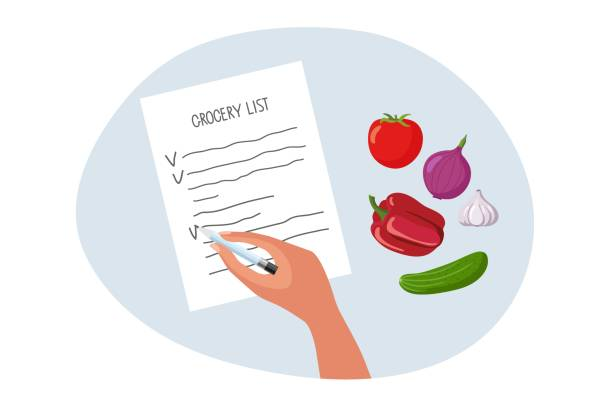

Loops#
Course Announcements
Due this week:
VQ8 due Wed
CL4 due Fri
A3 due Sun
Take your exam!
Control Flow - Loops#
whileforrange,continue,break
SideNote: counters#
# Initialize a counter variable
counter = 0
print(counter)
0
counter = counter + 1
print(counter)
1
counter = counter + 1
print(counter)
2
# shorthand - does same as above using +=
counter += 1
print(counter)
3
The idea here…is that as the code executes, the value of the counter increases. We’ll use these a lot in loops!
SideNote: append#
append is a list methods (we’ll talk about others soon) that adds an item to the end of an existing list in place
my_list = ['a', 'b', 'c']
my_list.append('d') ### NOTE THAT IT IS NOT ASSIGNED BACK TO my_list
my_list
['a', 'b', 'c', 'd']
# this is wrong - dont do this
my_list = ['a', 'b', 'c']
my_list = my_list.append('d') # DON'T DO THIS - avoid assigning back to a list
print(my_list)
None
Loops#
while Loops#
while Loop: live demo#
while is_sitting(studentA):
# studentB moves one sheet of paper from podium to table
for Loops#

for Loop: live demo#
students_in_line = ['Yawen', 'Rosalinda', 'Nathan']
brown_hair = []
other_hair = []
for student in students_in_line:
if has_brown_hair(student):
brown_hair.append(student)
else:
other_hair.append(student)
Activity I: Comprehension Check#
Complete all questions in this Google Form (https://forms.gle/gV3w2GhNgD6Hh6WF8) and then click submit.
# TEST THINGS OUT
this_list = ['hi', 'bye', 'good', 'bad']
this_list.append('ok')
# this_list = this_list + ['ok']
this_list
['hi', 'bye', 'good', 'bad', 'ok']
Loops: Code#
while Loop: code#
shopping_budget = 20
bill = 0
index = 0
prices = [3, 4, 10, 3, 2, 15, 7]
while bill < shopping_budget:
# add cost of item (prices) to bill
bill = bill + prices[index]
# increment index each time through the loop
index = index + 1
#print bill so we can see what's going on
print(bill)
3
7
17
20
for loop: code#
# Define a list of items
shopping_list = ['bananas', 'cookies', 'ice cream']
in_stock = ['apples', 'bananas', 'cookies', 'chicken', 'cucumbers']
in_cart = []
# Loop across each element
for item in shopping_list:
# print(item)
if item in in_stock:
in_cart.append(item)
else:
print(item + ' not in stock')
print(in_cart)
print(item)
ice cream not in stock
['bananas', 'cookies']
ice cream
# Loop across items in a string
vowels = ['A', 'E', 'I', 'O', 'U', 'a', 'e', 'i', 'o', 'u']
my_string = 'python'
for char in my_string:
if char not in vowels:
print(char)
p
y
t
h
n
Activity II: loops#
Complete the coding question in this Google Form (https://forms.gle/isggkAXwhMy9BN9h6) and then click submit.
Write a function
sum_odd()containing a loop that will add up all the odd numbers in an input list.
For example:
sum_odd(['a', 3, 5, 6])would return 8, b/c 3 + 5 is 8
# WRITE CODE
# define a function - input will be some list
# loop over each thing in the input list
# if thing is an integer and that integer is odd (% 2 -> 0....even)
def sum_odd(input_list):
out_sum = 0
for val in input_list:
if type(val) == int and val % 2 !=0:
out_sum = out_sum + val
return out_sum
# can i do this using append?
# another possible solution (discussed in 2P lecture)
def sum_odd(input_list):
val_list = []
for val in input_list:
if type(val) == int and val % 2 !=0:
val_list.append(val)
out_sum = sum(val_list) #add all numbers in val_list together
return out_sum
# there is a sum function (used in append answer)
sum([1, 2, 3])
6
# TEST FUNCTION
sum_odd(['a', 3, 5, 6])
8
Dictionaries: Indexing & Looping#
Reminder: Dictionaries are indexed by their key.
# recall: collections lecture
scores = {
'Alondra': 85,
'Holly': 58,
'Brooke': 92,
'Pauline': 47,
'Minqi': 76
}
scores['Holly']
58
passing_score = 60
passed_students = []
for student in scores:
if scores[student] >= passing_score:
# print(student)
passed_students.append(student)
print("Students who passed:", passed_students)
Students who passed: ['Alondra', 'Brooke', 'Minqi']
Q&A
Q: How does python know that item (for the grocery example) is the items on the list.
A: Because we are usingindexto specify the position (index) in the list and adding that tobill.
Q: do we have to define the variables every single time, or just in some of them
A: To use a variable, it must previously be defined. If in a function, must be defined inside the function definition or passed in as an input.
Q: I am confused why we used index in the while example. what would happen if we didn’t have index?
A: We would not have been able to specify which value inbillsto add.
Q: Loops are more confusing than the concepts we have learned. How should I practice to familiarize with loops?
A: Deeply learn the concept first (know what a for and while loop are conceptually). Then, familiarize with the code. Then practice examples on your own. Explaining out loud what’s going on each iteration in the loop is great practice!
Q: May you explain the clearest difference between for and while loops?
A:forloops loop over a collection.whileloops loop until a condition is no longerTrue.
Course Announcements
Due:
CL4 due Fri
A3 due Sun
Take your exam!
Notes:
E1 scores/exams will be available to view on PrairieLearn at 5PM Friday
can sign up in PrairieTest for E1 retake on Friday 5/1 (tomorrow)
can “report an issue” if you believe you were graded incorrectly on anything
Mid-course survey will be available on Saturday (linked from Canvas and course website); optional for EC
(to self) Discuss outcomes from Loops II activity
range, continue and break#
Activity III: Dictionaries#
Complete the coding question in this Google Form (https://forms.gle/RocHJ6rmMTxWYHyH8) and then click submit.
Define a function
name_dictionarythat will generate a dictionary that stores each unique letter in the inputnameas a different key, and the number of times each letter shows up in your name as the letter’s value.
For example,
name_dictionary('Shannon')would return:{'S':1, 'h':1, 'a': 1, 'n': 3, 'o': 1}
An aside…there’s a shortcut! The += operator
out = out + 4
# OR
out += 4
# THE CODE
# define a function - input string
# loop through each letter in input string
# determine if letter is in dictionary yet
# if not - add it and give the value 1
# if it is, increase value for key by 1
def name_dictionary(name):
out_dict = {}
for ltr in name:
if ltr not in out_dict:
#name - ltr (we want just the letter, not the whole name)
out_dict[ltr] = 1
else:
out_dict[ltr] += 1
# print(out_dict)
return out_dict
# TEST IT OUT
name_dictionary('Shannon')
{'S': 1, 'h': 1, 'a': 1, 'n': 3, 'o': 1}
name_dictionary('Jennifer')
{'J': 1, 'e': 2, 'n': 2, 'i': 1, 'f': 1, 'r': 1}
range#
range is an operator to create a range of numbers, that is often used with loops.
# for temp in [114, 115, 116, 117, 118]:
for temp in range(114, 119):
print(temp)
if(temp > 115):
print('The tea is too hot!')
114
115
116
The tea is too hot!
117
The tea is too hot!
118
The tea is too hot!
# what if you include a float
# ans: requires integers as input values
print(*range(114, 119.5))
---------------------------------------------------------------------------
TypeError Traceback (most recent call last)
Cell In[40], line 3
1 # what if you include a float
2 # ans: requires integers as input values
----> 3 print(*range(114, 119.5))
TypeError: 'float' object cannot be interpreted as an integer
continue#
continue is a special operator to jump ahead to the next iteration of a loop.
for number in range(1, 11):
if number % 2 == 0:
continue # Skip even numbers
print(number)
1
3
5
7
9
break#
break is a special operator to break out of a loop.
break examples#
numbers = [4, 7, 10, 3, 8, 5]
for num in numbers:
print(num)
if num == 8:
print("Found 8!")
break # Stop the loop as soon as we find 8
4
7
10
3
8
Found 8!
Altogether#
It is possible to use these all together…
find_first_evenfinds the first even number in arangeif that number is odd,
continueonce you find the first even number
break
def find_first_even(numbers):
for i in range(len(numbers)):
# print(i)
if numbers[i] % 2 != 0:
continue
out = numbers[i]
break
return out
# used for questions and testing things out in the 2PM lecture
# correct response above
# def find_first_even(numbers):
# for i in range(len(numbers)):
# # print(i)
# if numbers[i] % 2 == 0:
# out = numbers[i]
# break # maybe mess with this too
# return out
find_first_even(numbers = [1, 3, 7, 9, 6, 4, 11, 6, 8])
6
Activity IV: range, break, continue#
Please complete the Google Form here: https://forms.gle/SsRvuJ7XT1zqy7hZA
Define a function
find_all_neg()that will extract all negative values from a list, returning the list of negative numbers.
You can assume all elements in the input list are numeric.
## FUNCTION
def find_all_neg(input_list):
out_list = []
for val in input_list:
if val < 0:
out_list.append(val)
# else:
# continue
return out_list
## TEST IT OUT
find_all_neg([1, 2, -4, -5, 7])
[-4, -5]
Code Style: Loops#
for/whilestatement with a colon at the end on first lineall code within the loop inside a code block (indented)
Good Code Style
number = 5
while number < 0:
print(number)
number = number + 1
Code Style to Avoid
number=5
while number<0:print(number);number=number+1 # avoid all on a single line
Activity V: Additional Loops Practice#
Please complete the Google Form here: https://forms.gle/yhCTF8qbhkyFHPeE9
Q1. Define a function
remove_special_characters()that will remove any characters from a string if they are one of these characters:'!@#$%^&*();<>?/'
# FUNCTION
# input: 'hello!@'
# output: 'hello'
# TEST IT OUT